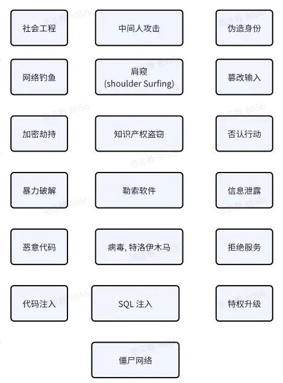

你的软件系统安全吗
Posted on Tue 20 August 2024 in Journal
| Abstract | 你的软件系统安全吗 |
|---|---|
| Authors | Walter Fan |
| Category | learning note |
| Status | v1.0 |
| Updated | 2024-08-20 |
| License | CC-BY-NC-ND 4.0 |
如果你的软件系统可以通过网络访问, 可以由多人操作, 可以访问或操作敏感数据, 或者可能暴露隐私, 等等, 请一定要保护你的系统.
那么你的软件系统安全吗?
一. 先问自己如下 4 个问题
1. What are we working on? 我们的系统在干啥?
例如电商系统: - 我们在卖啥? - 提供什么售前和售后服务? - 用户和帐备信息怎么管理的? - 数据是如何防护和归档的? - 等等
2. What can go wrong? 哪一块可能出安全问题?
还是以电商系统为例:
- 用户密码有无可能破解或泄漏?
- 卖家和买家和隐私有无可能泄漏?
- 帐务系统有无可能篡改?
安全威胁种类请见下图

3. What are we going to do about it? 我们可能怎么来解决这些问题?
-
定义业务和系统范围
-
创建数据流图（DFD）： 制作一个数据流图，它展示了系统中数据流动的路径，包括输入、处理和输出过程。
3 识别实体和信任边界： 确定系统中的用户、数据、进程和其他实体，以及它们之间的信任关系。 例如 超级管理员, 管理员, 用户, 包括运维工程师, 卖家, 买家
-
应用 STRIDE 分类： 根据 STRIDE 模型的六个分类，逐一检查每个组件和数据流，识别可能的威胁
-
评估威胁的可能性和影响： 对每个已识别的威胁进行风险评估，考虑其可能性和对系统的潜在影响。
-
设计缓解措施： 针对每个威胁设计缓解措施，这可能包括技术控制、流程改进或政策变更。
-
优先级排序： 根据威胁的风险等级和业务影响，对缓解措施进行优先级排序。 按照 bug 的分级 S1(block issue) , S2(critical), ... 为以下威胁和漏洞报 security bug
-
实施控制措施： 实施选定的缓解措施，并确保它们不会对系统的其他部分产生负面影响。 例如修复安全漏洞(bug),
-
验证和测试： 验证控制措施是否有效，并进行必要的测试以确保它们按预期工作。
-
文档和沟通： 记录整个威胁建模过程和结果，与团队成员和利益相关者沟通，确保透明度和理解。
-
监控和迭代： 持续监控威胁环境的变化，并定期回顾和更新威胁模型。 每个 release 前更新威胁模型
4. Did we do a good enough job? 我们有没有做好防护
例如: 传输层: 有无启用 HTTPS, TLS, DTLS 和 SRTP 应用层: 有无做好 3A , 防范威胁, 消除漏洞
二. 将可能的威胁进行分类
我们可能应用常见的 STRIDE 模型
Spoofing 欺骗
防止非法获取或者伪造帐号信息， 访问我们的系统 - 非认证的用户不可访问系统 - 非授权的用户不可访问没有权限的模块， 不能进行非授权的操作、
Tampering 篡改
防止篡改或损坏系统中的数据 - 数据在传输层要安全, 要使用 HTTPS, TLS, DTLS 或者 SRTP 进行加密传输
Repudiation 否认
防止不承认对系统的攻击或者误用 管理员以及用户的关键操作要可追溯
Information Disclosure 信息泄露
- 配置文件中的帐户密码不可使用明文
- PII (Personal Insensitive Information ) 安全
- PII 在服务器的日志或数据库中不可随意存放 - 密码必须经过不可逆的哈希之后再存
- 个人的邮件, 电话等信息均不可存放在日志文件中, 只可以放在有访问限制的数据管理系统中
- 不可泄露用户的个人隐私
- 业务关键数据在应用层要有上述 “3A” 的保护
- 核心的算法, 模型和数据, 用户不能直接获取， 必须通过我们的应用程序才能有限度地调用
Denial of Service 拒绝服务
防止非法的攻击导致服务不可用, 相应的措施有 - 通过防火墙、安全访问区、访问控制列表和端口访问的设置防止未授权访问、篡改和拒绝服务（DoS）攻击 - 对于非法访问的错误请求实施 rate limit and block policy
Elevation of Priviledge 特权提升
- 未经授权提升权限级别
- 未经授权访问到敏感的信息
三. 将所有威胁和漏洞登记, 逐一解决
例如: - 在 DB 中的用户名密码是明文存储 - (严重程度: S1 Critial) Solution: 以 sha256 /sha512 哈希值对密码进行存储
安全测试工具
- 静态应用程序安全测试工具 SAST
- OWASP Dependency bot
- dependency-check
- talisman
- owasp-zap
术语
- Authentication 认证要求 - 用户是不是通过认证的合法用户？
- Authorization 授权要求 - 用户是不是经过授权的合法用户, 所访问的模块是在其权限范围之内的？
- Audit 可审查和追溯要求 - 用户的访问和操作是不是可以审查和追溯的？
- 资产: 需要构建防御机制加以保护的关键实体
- 漏洞: 系统中可用来危害其安全性的地方
- 威胁: 利用潜在漏洞危害系统安全的潜在负面行为或事件
- 攻击: 在系统上执行的未经授权的破坏安全性的恶意行为
- 风险: 风险是威胁业务成功的诸多因素的组合。 比如，可以想象一个汽车窃贼（威胁代理）在停车场检查汽车（系统）是否有未上锁的门（漏洞），当他们找到一辆车时，他们打开车门（漏洞利用），并拿走里面的东西（影响）。
- SAST: static application security testing (SAST)
- DAST: dynamic application security testing (DAST)
参考资料
-
OWASP 备忘录 https://cheatsheetseries.owasp.org/index.html
- https://cheatsheetseries.owasp.org/cheatsheets/Threat_Modeling_Cheat_Sheet.html
-
Thread modelling 工具
-
https://github.com/OWASP/threat-dragon
-
https://www.youtube.com/watch?v=hUOAoc6QGJo&list=PLUKo5k_oSrfOTl27gUmk2o-NBKvkTGw0T&index=10
-
-
安全术语参考
- https://www.sans.org/security-resources/glossary-of-terms/
-
安全编程实践快速参考
-
https://owasp.org/www-project-secure-coding-practices-quick-reference-guide/assets/docs/OWASP_SCP_Quick_Reference_Guide_v21.pdf
-
本作品采用知识共享署名-非商业性使用-禁止演绎 4.0 国际许可协议进行许可。